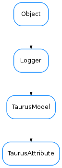

TaurusAttribute¶

-
class
TaurusAttribute(name, parent, **kwargs)[source]¶ Bases:
taurus.core.taurusmodel.TaurusModel-
activatePolling(period, unsubscribe_evts=False, force=False)[source]¶ activate polling for attribute.
Parameters: period (int) – polling period (in miliseconds)
-
classmethod
buildModelName(parent_model, relative_name)[source]¶ build an ‘absolute’ model name from the parent model and the ‘relative’ name. - If parent_model is a TaurusDevice, the return is a composition of the database model name and is device name - If parent_model is a TaurusAttribute, the relative name is ignored and the parent name is returned
-
disablePolling()[source]¶ Disable polling and if polling is active also deactivate it. See
isPollingEnabled()for clarification of what enabled polling means.
-
enablePolling(force=False)[source]¶ Enable polling. See
isPollingEnabled()for clarification of what enabled polling means.Parameters: force (:class:~`bool`) – True also activates polling (see: activatePolling())
-
eventReceived(src, src_type, evt_value)[source]¶ Method invoked by the configuration object when a configuration event is received. Default implementation propagates the event to all listeners.
-
isPollingActive()[source]¶ Indicate whether polling is active. Active polling means that a periodic timer poll the attribute. By default the attribute creation does not activate polling.
Return type: :class:~`bool` Returns: whether polling is active See: activatePolling(),disablePolling()
-
isPollingEnabled()[source]¶ Indicate whether polling was activated/deactivated by user. Enabled polling does not mean that it is active - periodically poll the attribute. By default the attribute creation enables polling.
Return type: :class:~`bool` Returns: whether polling is enabled See: enablePolling(),disablePolling()
-